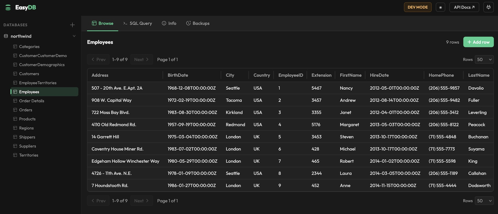

EasyDB is a small, fast, self-contained Go binary that serves SQLite databases over a REST API
and lets you explore SQLite databases using simple browser UI.
Auto-generated CRUD endpoints, scheduled backups, raw SQL, and a browser UI.
Whether you're digging through a local database or running EasyDB as a service,
the admin UI is always there. Browse tables, edit rows, run SQL with syntax highlighting,
and manage backups — all without leaving the browser.
localhost:8000/admin/

Table browser
Paginated, sortable view of any table. Insert, edit, and delete rows without writing SQL.
SQL editor
Write and run ad-hoc queries in the browser with syntax highlighting and instant results.
Auto CRUD endpoints
Every table gets GET, POST, PUT, and DELETE endpoints automatically. No code required.
Raw SQL over HTTP
POST parameterised queries from your app. Works alongside the CRUD endpoints.
Multi-database
Register multiple SQLite files and switch between them in the UI or via the API.
Backups
On-demand or scheduled snapshots via VACUUM INTO. Auto-rotation, one-click restore.
Install
Build from source.
Requires Go 1.22+. No other runtime dependencies — the SQLite driver is compiled in.
shell
# clone and build
git clone https://github.com/huyng/easydb
cd easydb
go build -o easydb ./cmd/easydb/
# optional: install to PATH
mv easydb /usr/local/bin/
# start with a database pre-registered
easydb --db ./mydata.db
Admin UI and OpenAPI docs are embedded in the binary.
Open http://localhost:8000/admin/ and /docs/api once running.
API reference
Everything you need.
All endpoints require an X-API-Key header when API_KEYS is set. Responses are JSON.
POST/api/databases/backup-allsnapshot all databases
Backups use VACUUM INTO — a consistent online snapshot that doesn't block reads or writes.
Set BACKUP_SCHEDULE=6h (or 30m, 1d) for automatic snapshots.
Oldest backups are deleted when BACKUP_MAX_COUNT is exceeded.
Configuration
All via environment variables.
CLI flags override env vars. No config file required.
Variable
Default
Description
API_KEYS
—
Comma-separated keys. Unset = dev mode (no auth).
DATA_DIR
data
Root dir for databases and registry.
HOST
127.0.0.1
Bind address.
PORT
8000
Port number.
ADMIN_ENABLED
true
Set false to disable the admin UI.
CORS_ORIGINS
*
Comma-separated allowed origins.
BACKUP_DIR
data/backups
Where backup files are stored.
BACKUP_MAX_COUNT
5
Max backups per database before rotation.
BACKUP_SCHEDULE
—
Auto-backup interval: 30s · 5m · 6h · 1d
EASYDB_OPEN
—
SQLite file to register on startup (same as --db).
CLI flags
--db string register a SQLite file on startup
--host string bind address (overrides HOST)
--port string port number (overrides PORT)
--data-dir string data directory (overrides DATA_DIR)